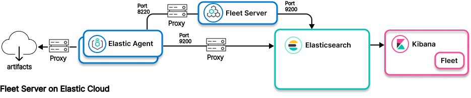
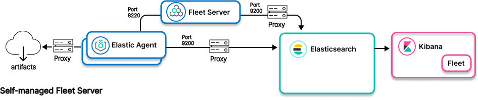

Elastic Agent to proxy to Elasticsearchedit


This architecture works with a variety of proxying tools to allow for more flexibility in your environment. Consider using Logstash as a proxy, as Logstash and the rest of the Elastic Stack are designed and tested to work together, and can be easier to support.
- Ingest model
-
Control path for Fleet Server on Elastic Cloud: Elastic Agent to proxy to Fleet Server to Elasticsearch
Control path for self-managed Fleet Server: Elastic Agent to Fleet Server to proxy to Elasticsearch
Data path: Elastic Agent to proxy to Elasticsearch - Use when
-
- Network restrictions prevent connection between Elastic Agent network and network where Fleet Server and Elastic Stack are deployed, as when Fleet Server is deployed on Elastic Cloud
- Network restrictions prevent connection between Elastic Agent and Fleet Server network and the network where Elastic Stack is deployed, as when Elastic Stack is deployed on Elastic Cloud
- Using Logstash as proxy is not feasible.
Currently Elastic Agent is not able to present a certificate for connectivity to Fleet Server. Therefore if a proxy placed between the Elastic Agent and Fleet Server is configured for mutual TLS, Elastic Agents won’t be able to establish connectivity to {fleet server}.
Resourcesedit
Info on Elastic Agent and agent integrations:
Info on using a proxy server:
Info on Elasticsearch: